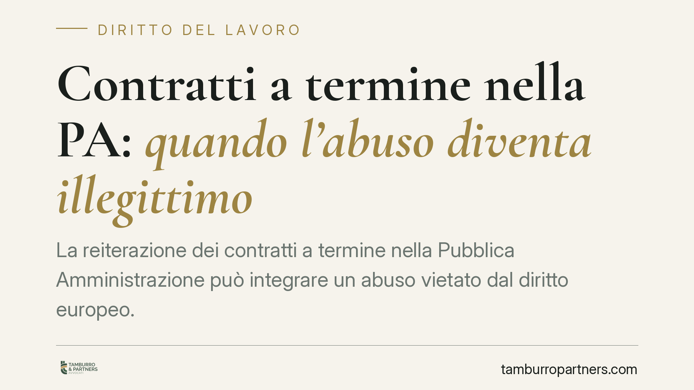

Contratti a termine nella PA: quando l'abuso diventa illegittimo
La reiterazione dei contratti a termine nella Pubblica Amministrazione può integrare un abuso vietato dal diritto europeo. Il lavoratore pubblico precario non ottiene la stabilizzazione automatica, ma ha diritto a un risarcimento del danno. Vediamo quando l'illegittimità scatta, perché conta e cosa può fare concretamente chi ha incatenato più rapporti a tempo determinato con un ente pubblico.

Il fatto e perché conta
Nel settore pubblico il ricorso ai contratti a tempo determinato è frequente, spesso per coprire esigenze che di temporaneo hanno ben poco. Quando questi rapporti si susseguono per anni, mascherando un fabbisogno stabile, si entra nel campo dell'abuso.
La questione tocca migliaia di lavoratori: supplenti, precari della sanità, collaboratori di enti locali. La disciplina è peculiare, perché nel pubblico impiego non valgono le stesse conseguenze previste per il settore privato.
Inquadramento normativo
La norma cardine è l'art. 36 del D.lgs. 165/2001, che regola l'utilizzo del lavoro flessibile nelle pubbliche amministrazioni. Il comma 5 stabilisce un principio chiaro: la violazione di disposizioni imperative in materia di assunzione non può comportare la costituzione di rapporti di lavoro a tempo indeterminato con la PA. È il cosiddetto divieto di conversione.
Il fondamento è costituzionale: l'accesso al pubblico impiego avviene di regola tramite concorso (art. 97 Cost.). Convertire automaticamente un contratto a termine abusivo in rapporto stabile aggirerebbe questa regola.
Qui nasce la tensione con il diritto europeo. La direttiva 1999/70/CE impone agli Stati membri di prevedere misure effettive contro l'abuso della reiterazione dei contratti a termine. Se la conversione è preclusa, deve esistere una sanzione alternativa adeguata e dissuasiva.
La Corte di Cassazione, anche a Sezioni Unite, ha ricostruito questo equilibrio: niente stabilizzazione, ma riconoscimento di un risarcimento del danno a favore del lavoratore. Si parla di danno comunitario, una voce di danno riconosciuta proprio per garantire l'effettività della tutela europea quando manca la conversione.
Quando scatta l'illegittimità
L'abuso si configura quando i contratti a termine vengono reiterati in assenza di reali ragioni temporanee, superando i limiti di durata e di numero fissati dalla legge, oppure quando il ricorso al tempo determinato serve a coprire esigenze ordinarie e durevoli dell'ente.
Non basta un singolo rinnovo. Ciò che rileva è il quadro complessivo: la successione dei rapporti, la loro continuità, l'identità delle mansioni e la stabilità del bisogno organizzativo che vi sta dietro.
Implicazioni pratiche
Per il dipendente pubblico precario la conseguenza è duplice.
Da un lato, non può pretendere di essere assunto a tempo indeterminato: il divieto di conversione resta fermo. Dall'altro, se dimostra l'abuso, ha diritto a un risarcimento.
La giurisprudenza ha individuato una misura di riferimento compresa tra 4 e 24 mensilità dell'ultima retribuzione, parametro mutuato dalla disciplina sui licenziamenti illegittimi. È un'indennità forfettaria: il lavoratore non deve provare nel dettaglio il danno subito, perché opera un meccanismo agevolato di risarcimento.
Resta possibile, in casi specifici, far valere ulteriori voci di danno, come la perdita di chance occupazionali, ma a condizioni probatorie più rigorose.
Un aspetto da non trascurare è la prescrizione: i diritti risarcitori sono soggetti a termini di decadenza e prescrizione che è bene verificare per tempo, per evitare di perdere la tutela.
Cosa fare in concreto
- Raccogliete la documentazione completa di tutti i contratti sottoscritti: date, durata, mansioni, eventuali proroghe e rinnovi. La ricostruzione cronologica è decisiva per dimostrare la reiterazione.
- Verificate la continuità del rapporto e la natura delle esigenze coperte: se avete sempre svolto gli stessi compiti, è un indizio forte dell'esistenza di un fabbisogno stabile.
- Controllate i termini di prescrizione rispetto alla data di cessazione dell'ultimo contratto, per non pregiudicare l'azione.
- Consigliamo di richiedere una valutazione preliminare della posizione prima di avviare qualsiasi iniziativa, così da stimare la fondatezza della pretesa e la quantificazione del risarcimento ipotizzabile.
- Non confondete risarcimento e stabilizzazione: la via giudiziaria ordinaria mira all'indennizzo, non all'assunzione a tempo indeterminato, che segue regole e percorsi distinti.
Conclusione
Il sistema italiano sceglie un compromesso: tutela il concorso pubblico negando la conversione, ma risponde alle richieste del diritto europeo con un risarcimento parametrato. Per chi ha vissuto anni di precariato nella PA, conoscere questo meccanismo è il primo passo per valutare in modo consapevole le proprie possibilità.
---
*Contributo informativo a cura di Tamburro & Partners - Avv. Giuseppe Tamburro. Non costituisce parere legale.*
Ogni storia di lavoro ha i suoi tempi.
Se gestisci HR e vuoi un confronto su contenzioso, ispezioni o licenziamenti, scrivi allo studio. Ti rispondiamo entro un giorno lavorativo.